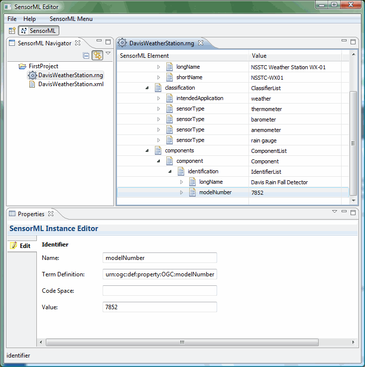
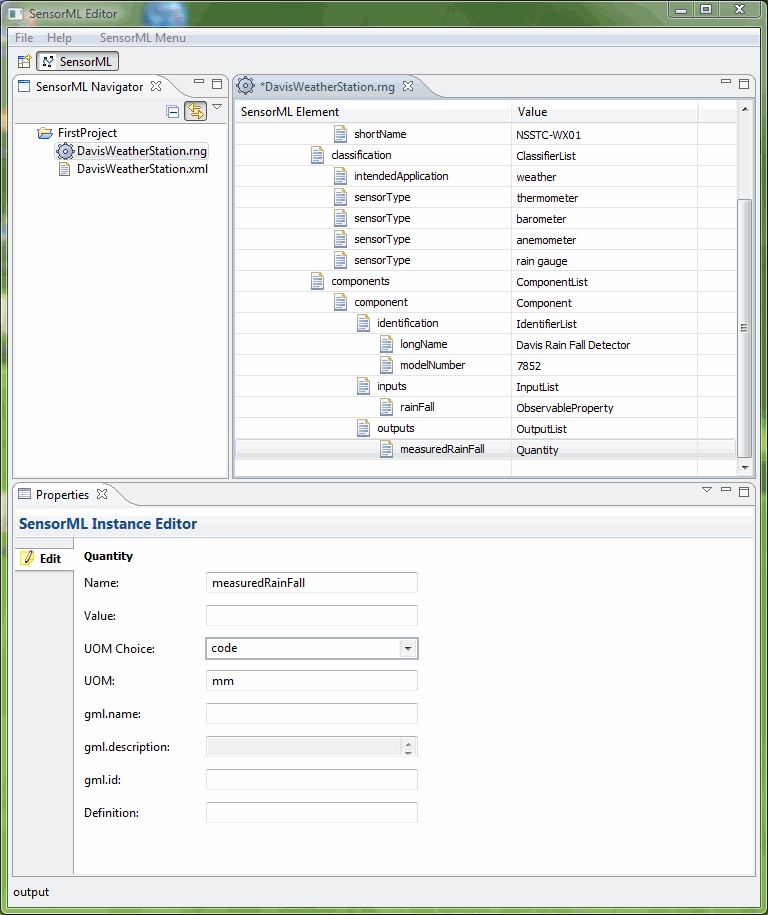

ComponentList and Components
Highlight the components element in the tree under member:System. You will notice that there are not any properties to edit. Before properties will show up for editing, you need to select the component type: ComponentList or xlink:href. In this case, we are going to high member:System and select Insert:components:ComponentList. At that point, the editable attributes and elements for ComponentList will appear in the Properties view.
Select sml:Component from the Available Fields. The available fields is a list of items that are valid child elements of sml:Component.

Finally, we name our component and enter its identifiers, inputs, and outputs.



